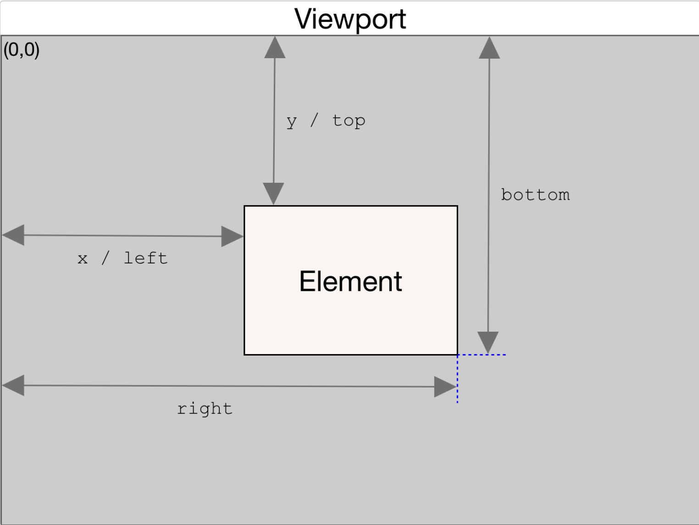

css div 垂直水平居中，并完成 div 高度永远是宽度的一半（宽度可以不指定）
考点：padding-bottom 的 百分比 使用
设置成百分比：定义基于父元素宽度的百分比下内边距。
具体来说，当设置 padding-bottom: 50% 时，表示元素的 高度 被设置为其宽度的50%。这样做的效果是，.inner 元素的高度被限制在其宽度的一半，同时保持宽高比为1:2（高度是宽度的一半）。
1 | |
css 权重值
- 内联样式的权重：1000
- ID 选择器的权重：100
- 类选择器、属性选择器和伪类选择器的权重：10
- 元素选择器和伪元素选择器的权重：1
- 通配符 0
盒模型
盒模型是指在网页中，每个元素都被表示为一个矩形的盒子，这个盒子包含了元素的内容（content）、内边距（padding）、边框（border）和外边距（margin）。
CSS盒模型：标准模型(content-box) + IE模型(border-box)
标准盒模型： 盒子总宽度/高度 = width/height + padding + border + margin。（ 即 width/height 只是内容高度，不包含 padding 和 border 值 ）
IE盒子模型： 盒子总宽度/高度 = width/height + margin = (内容区宽度/高度 + padding + border) + margin。（ 即 width/height 包含了 padding 和 border 值 ）
JS如何获取盒模型的 宽和高
1 | |
1 | |
window.getComputedStyle(test).width 不管 box-sizing 为何值，都是你设置的 witdh/height
box-sizing 为 content-box 时，test.getBoundingClientRect().width/height 和 test.offsetWidth, test.offsetHeight 是 宽/高 + 内边距 + 边框
box-sizing 为 border-box 时，test.getBoundingClientRect().width/height 和 test.offsetWidth, test.offsetHeight 是 宽/高，不包含 内边距、边框
dom.getBoundingClientRect()
Element.getBoundingClientRect() 方法返回一个 DOMRect 对象，其提供了元素的大小及其相对于视口的位置。
该方法返回的 DOMRect 对象中的 width 和 height 属性是包含了 padding 和 border-width 的，而不仅仅是内容部分的宽度和高度。
在标准盒子模型中，这两个属性值分别与元素的 width/height + padding + border-width 相等。而如果是 box-sizing: border-box，两个属性则直接与元素的 width 或 height 相等。

注意 right 和 bottom。
计算父元素高度
1 | |
1 | |
在父元素没有设置 overflow: hidden 时，获取的高度都是 100px
在父元素设置 overflow: hidden 时，获取的高度都是 110px。
加了 overflow: hidden，给父元素创建了一个 BFC，父元素创建了一块独立的渲染区域，是一个环境，里面的元素不会影响到外部的元素 。
BFC
BFC 是 CSS 布局的一个概念，是一块独立的渲染区域，是一个环境，里面的元素不会影响到外部的元素 。
BFC 渲染规则/原理
- 内部的 Box 会在垂直方向，从顶部开始一个接着一个地放置；
- Box 垂直方向的距离由 margin (外边距)决定，属于同一个 BFC 的两个相邻 Box 的 margin 会发生重叠；
- 每个元素的 margin Box 的左边， 与包含块 border Box 的左边相接触，（对于从左到右的格式化，否则相反）。即使存在浮动也是如此；
- BFC 在页面上是一个隔离的独立容器，外面的元素不会影响里面的元素，反之亦然。文字环绕效果，设置 float；
- BFC 的区域不会与 float Box 重叠（清浮动）;
- 计算 BFC 的高度时，浮动元素也参与计算。
CSS在什么情况下会创建出BFC（即脱离文档流）
- 根元素，即 HTML 元素（最大的一个 BFC）
- 浮动（ float 的值不为 none ）
- 绝对定位元素（ position 的值为 absolute 或 fixed ）
- 行内块（ display 为 inline-block ）
- 表格单元（ display 为 table、table-cell、table-caption、inline-block 等 HTML 表格相关的属性 )
- 弹性盒（ display 为 flex 或 inline-flex ）
- 默认值。内容不会被修剪，会呈现在元素框之外（overflow 不为 visible）
两个div上下排列，都设margin，有什么现象？
外边距重叠现象
- 都正取大值
- 一正一负相加
1 | |
上面例子的结果是，c1 和 c2 之间只有 30px 的 margin 间距。
解决办法：
父元素使用 flex 布局，设置
flex-direction: column;使用 padding
将 c1 和 c2 用一个容器包裹起来，然后让这个容器触发 BFC（如：overflow: hidden;）
子元素浮动后，父元素高度塌陷问题？
1 | |
子元素设置浮动后，由于脱离了正常的文档流，导致父元素高度塌陷（因为父元素没有设置高度）
解决办法是，让父元素触发 BFC （如：overflow: hidden;），相当于
BFC 清除浮动
1 | |
我们设置 floatDiv 浮动后，floatDiv 覆盖在 normalDiv 之上，要想 normalDiv 不被覆盖，触发 normalDiv BFC 即可。